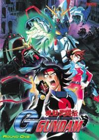

Mobile Fighter G Gundam
Domon Kashuu has been selected to represent his nation, Neo-Japan, in a world where much of humanity lives in space colonies. The dominance of the colonies is determined by a tournament held once every four years. Colony representatives must use giant robots called gundams to fight in the tournament. While Domon's quest is for his country, he spends much of his time searching for his brother, who has been blamed for the deaths of their parents and the disappearance of a very dangerous weapon.